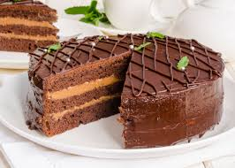

Introducción
Este pastel de chocolate es la receta perfecta para cualquier ocasión especial o una tarde de antojo. Con una textura suave y esponjosa y un sabor profundo, este pastel es irresistible. Aquí te enseñamos cómo prepararlo, paso a paso.
Tiempo total de preparación: 1 hora
Rinde para: 8-10 porciones
Ingredientes
- 200g de harina
- 100g de cacao en polvo
- 200g de azúcar
- 4 huevos
- 200ml de leche
- 100g de mantequilla
- 1 cucharadita de polvo de horneaar
- Una pizca de sal
- 1 cucharadita de esencia de vainillaa
Estos son los ingredientes que necesitarás para crear este delicioso pastel de chocolate. Asegúrate de tener todo listo antes de comenzar para que el proceso sea más fácil y rápido.
Instrucciones
A continuación, te explicamos los pasos detallados para que puedas preparar tu pastel sin problemas:
- Precalienta el horno a 180°C (350°F).
- En un tazón grande, mezcla la harina, el cacao en polvo, el azúcar, el polvo de hornear y la sal. Asegúrate de que todo esté bien incorporado.
- En otro tazón, bate los huevos con la leche, la mantequilla derretida y la esencia de vainilla. Mezcla bien hasta obtener una mezcla suave.
- Agrega los ingredientes húmedos a los ingredientes secos y mezcla hasta que obtengas una masa suave y homogénea.
- Vierte la mezcla en un molde engrasado. Hornea durante 30-35 minutos, o hasta que al insertar un palillo en el centro, éste salga limpio.
- Deja enfriar el pastel durante 10 minutos en el molde, luego desmóldalo y deja que se enfríe completamente.
- ¡Disfruta de tu delicioso pastel de chocolate! Puedes decorarlo con crema batida, frutas o un poco de chocolate derretido.
Consejo:
Para un pastel aún más delicioso, puedes agregar chispas de chocolate a la mezcla antes de hornear. Esto le dará un extra de sabor y textura.